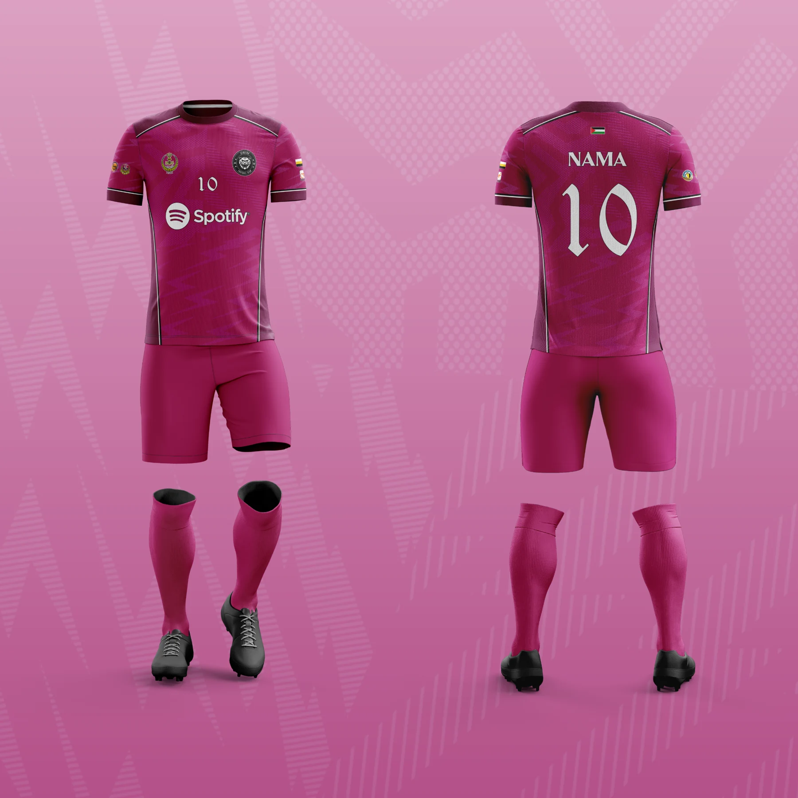

THE PORTFOLIO / APPAREL DESIGN
Apparel
Design.
Team kits, corporate shirts and custom apparel — designed from front to back.
28 images05 categoriesClick any image to explore
01 /
Sportswear
10 images




02 /
Corporate & Organisation
06 images


03 /
T-Shirt & Muslimah
06 images


04 /
Family Day
03 images


05 /